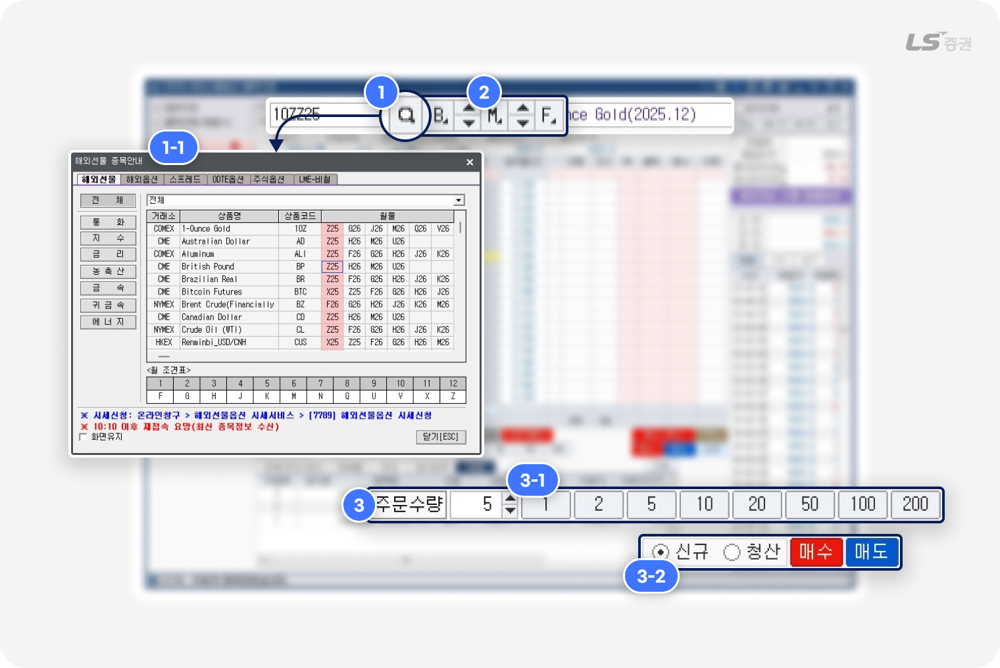
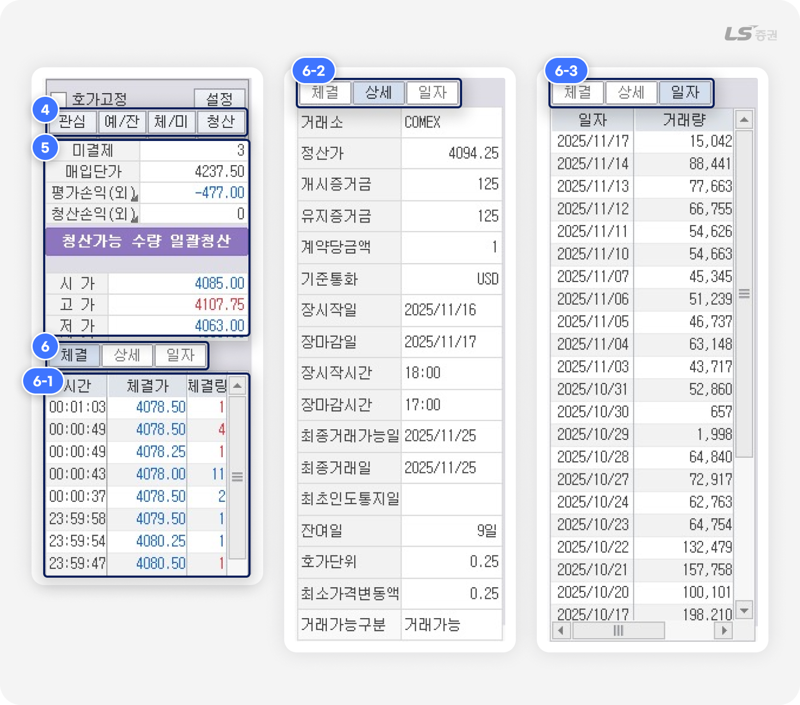
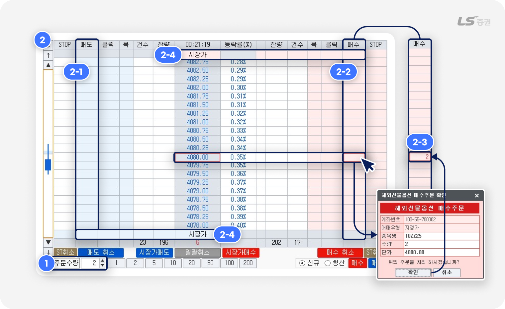
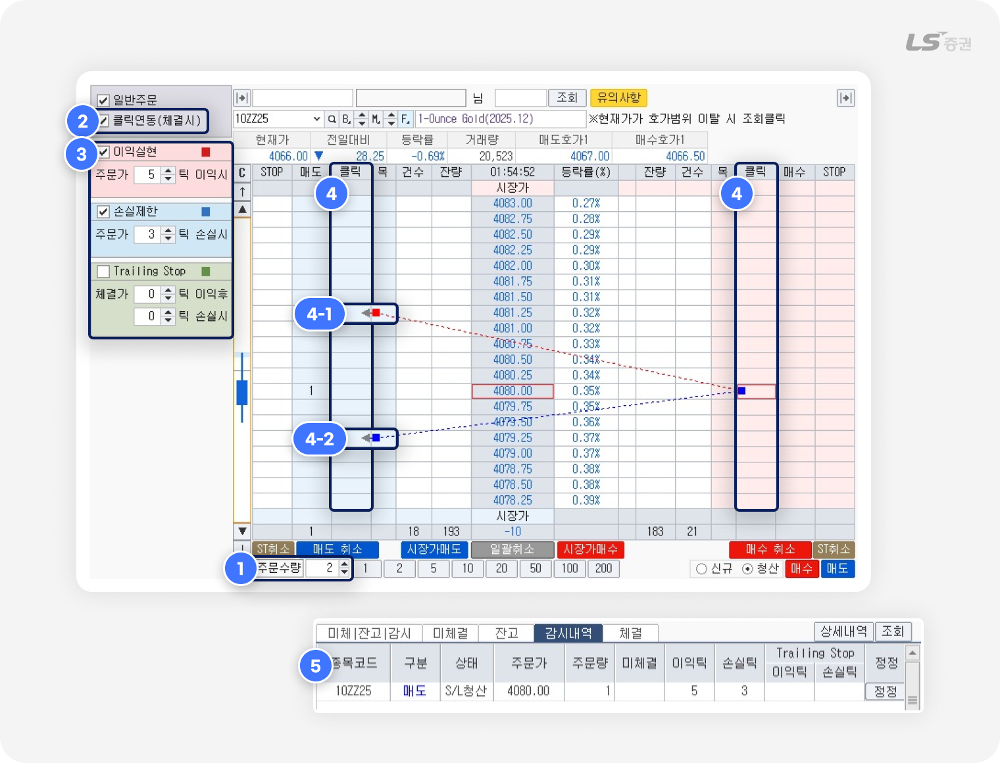
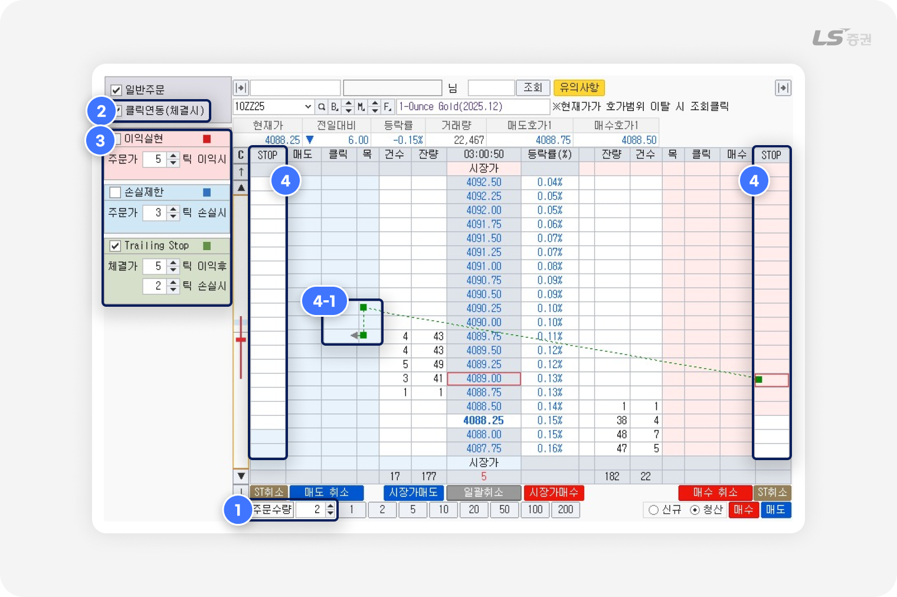
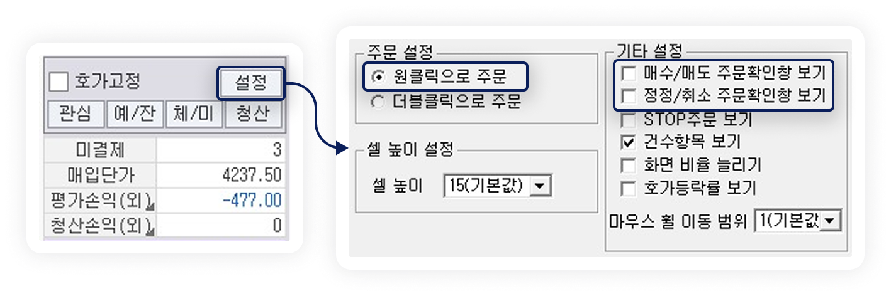
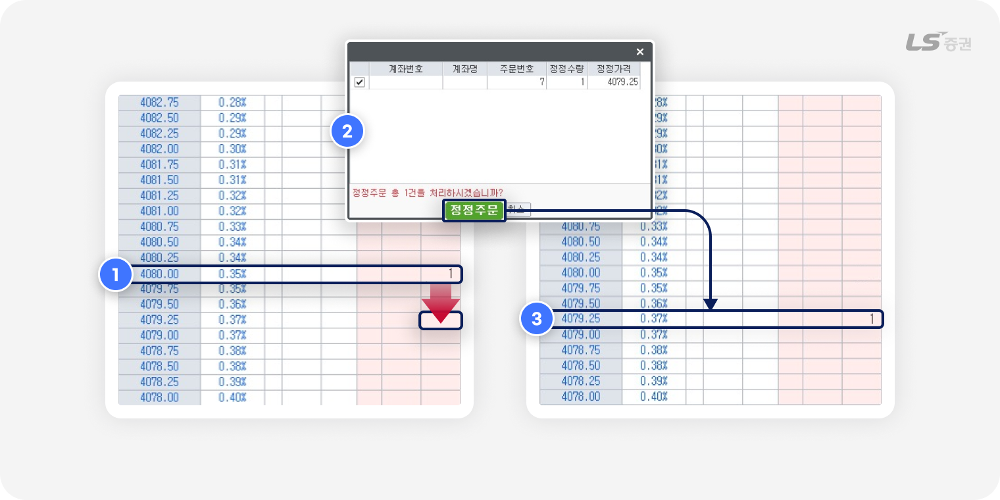
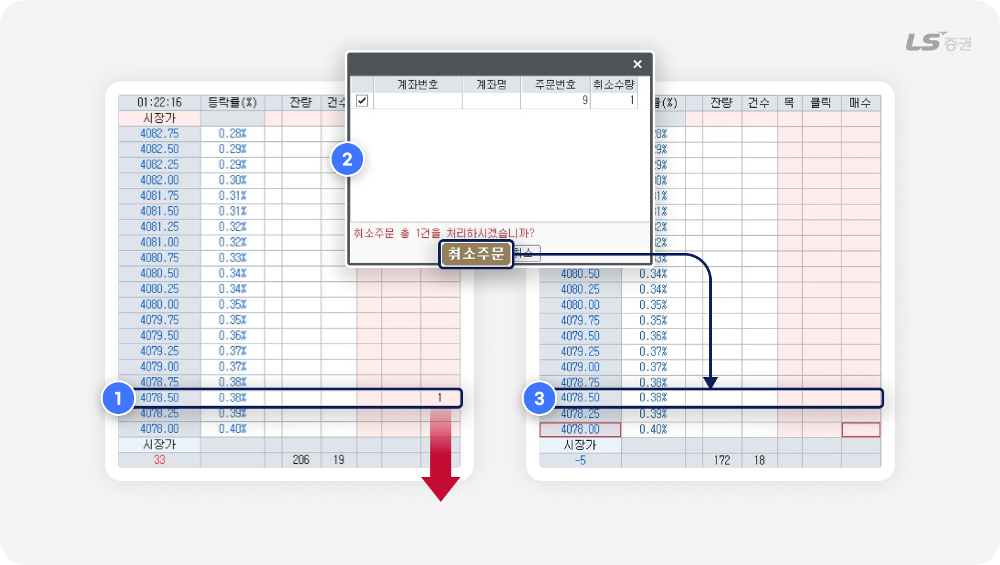
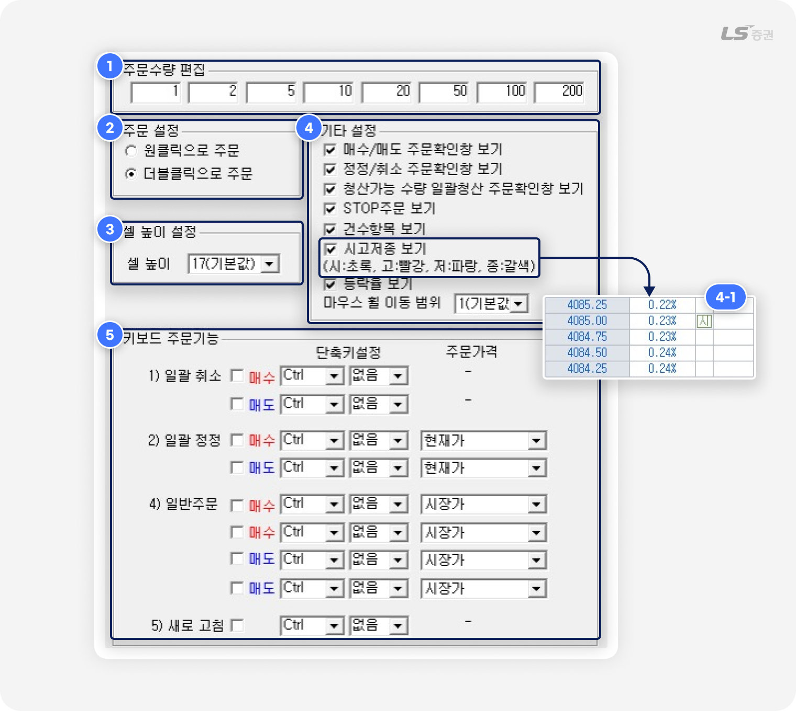

.png)
[5970] 해외선물옵션 클릭주문
초단위 승부,
클릭으로 완성하는 스마트 매매
[5970] 해외선물옵션 클릭주문 화면은 호가를 직접 입력하지 않고 호가창을 클릭하는 방식으로 빠르고 직관적인 매매가 가능한 것이 특징입니다.
또한 T/S(트레일링 스탑), STOP 주문 등 복잡한 조건 설정도 클릭 한 번으로 신속하게 접수 · 관리할 수 있어 실용적입니다.
아울러 본 화면은 [5972]해외선물옵션 서버일반주문 화면과 주문 조건 및 내역을 공유하므로, 상황에 따라 두 화면을 병행하면 주문을 더욱 효율적으로 운영할 수 있습니다.
간편 주문에 속도를 더하는
이 화면에서 주목할 특징은?
| 특징 | 이런 점이 좋아요 |
|---|---|
| 간편한 클릭 주문 | 더블클릭 또는 원클릭으로 호가 입력 없이 신속하게 주문 |
| 청산조건 설정 | 주문 체결 후 이익실현, 손실제한, T/S(트레일링 스탑) 등 청산 주문 가능 |
| S/L (Stop-Loss) 주문 | 보유한 미결제 잔고를 청산하는 조건부 주문 기능 제공 |
| 감시내역 관리 | 설정한 주문 조건의 내역 확인 및 정정 / 취소 지원 |
| 타 주문화면 연동 | [5972] 해외선물옵션 서버일반주문 화면과 주문 조건 및 주문 내역 공유 관리 |
빠른 주문을 위한 필수 체크,
01 주문 전 준비

-
1
종목 선택
- 종목 검색 팝업(1-1번)에서 상품군 분류를 통해 근월물, 특정 월물, 행사가별 옵션 등을 선택할 수 있습니다.
- ‘화면유지’ 체크 시 종목 선택 후에도 팝업이 닫히지 않고 유지됩니다.
-
2
종목 전환 버튼
- B 버튼 : 기초자산(Base) 상품군에서 원하는 상품을 선택할 수 있습니다.
- M 버튼 : 조회중인 상품의 만기월물(Month)을 선택할 수 있습니다.
- F 버튼 : 옵션 조회 중 클릭 시 해당 종목의 기초자산을 기반으로 한 선물 종목을 조회합니다.
-
3
주문수량 설정
- 수량을 직접 입력하거나, 빠른 수량 버튼(3-1번)으로 사전에 주문수량을 미리 설정할 수 있습니다.
- 빠른 수량 버튼(3-1번) : '설정 - 주문수량 편집'에서 최대 8개까지 지정할 수 있습니다.
-
주문가능수량(3-2번) :
주문 종류 선택 후 매수 / 매도 버튼 클릭 시 각 요건별 주문가능수량이 자동 입력됩니다.
- 1) 신규 매수 / 신규 매도 : 신규 포지션으로 계약할 수 있는 수량이 주문수량(3번)에 입력됩니다.
- 2) 청산 매수 / 청산 매도 : 기존에 보유한 미결제 포지션 중 청산할 수 있는 수량이 주문수량(3번)에 입력됩니다.

-
4
빠른 화면 이동
- 관심 : [2074] 해외선물 관심종목 화면에서 관심종목을 선택하여 본 화면에 조회할 수 있습니다.
-
예/잔 :
[6027] 해외선물 예수금/잔고현황 화면에서 가용자금 및 보유잔고를 점검하고 보유종목을 선택하여 본 화면에 조회할 수 있습니다.
-
체/미 :
[6022] 해외선물 주문체결/미체결 화면에서 주문내역 및 체결 결과를 확인하고 미체결 주문을 취소할 수 있습니다.
- 청산 : [5974] 해외선물옵션 일괄청산주문 화면에서 보유잔고에 대한 청산 주문을 접수할 수 있습니다.
-
5
종목 시세 조회
- ‘평가손익’ 및 ‘청산손익’ 클릭 시 원화(원)와 외화(외)를 전환하며 조회할 수 있습니다.
-
6
종목 상세정보 조회
- (6-1번) 체결 탭 : 선택 종목의 당일 틱 단위의 체결가와체결량 내역을 실시간으로 조회합니다.
- (6-2번) 상세 탭 : 선택 종목의 증거금, 잔여일 등 상세 정보를 조회합니다.
- (6-3번) 일자 탭 : 선택 종목의 일별 총 거래량 내역을 조회합니다.
👉 이제 마우스 클릭으로 주문할 준비가 완료되었습니다. 그럼 주문을 시작해 볼까요?
클릭만으로 접수 완료,
02 매수/매도 주문하기
일반 매수/매도 주문
종목과 수량을 사전 설정해두고, 호가를 클릭하여 해당 가격에 빠르게 주문을 접수할 수 있습니다.

예를 들어 볼까요?
2 계약에 가격 4,080.00 으로 신규 매수 주문을 체결하려는 경우
-
1
주문수량 설정
- 매수/매도하려는 주문수량을 입력합니다. 예시에서는 ‘2’를 입력합니다.
-
2
종목 전환 버튼
-
원하는 호가의 좌측 매도(2-1번) 또는 우측 매수(2-2번) 주문영역을 더블클릭하면 주문이 접수됩니다.
예시에서는 4080.00 호가 우측의 ‘매수’ 주문영역을 더블클릭하여 주문을 접수해 보겠습니다. - 주문이 접수되면 '매수' 주문영역에 해당 호가의 누적 미체결 수량(2-3번)이 표시됩니다.
- (2-3번) 매수 시장가 또는 매도 시장가 측면의 매도/매수 주문영역을 더블클릭하면 호가를 확인하는 과정 없이 빠르게 시장가에 주문을 접수할 수 있습니다.
-
원하는 호가의 좌측 매도(2-1번) 또는 우측 매수(2-2번) 주문영역을 더블클릭하면 주문이 접수됩니다.
클릭주문
틱 기준으로 신규/청산 주문 조건을 설정하고, 호가를 클릭하여 매수/매도 주문을 접수합니다.
주문이 체결되어 미결제 잔고가 발생한 순간부터 청산 조건을 감시하고, 조건 충족 시 청산 주문이 자동으로 접수됩니다.

예를 들어 볼까요?
2 계약에 가격 4,080.00 으로 신규 매수 주문을 체결하고, 체결된 잔고 가격이 5틱 상승 시 매도하여 익절하거나, 3틱 하락 시 매도하여 손절하려는 경우
-
1
주문수량 설정
- 매수/매도하려는 주문수량(예시는 2)을 입력합니다.
-
2
클릭주문 설정
- 클릭주문을 사용하려면 우측 상단 ‘클릭연동(체결시)’에 체크해 주세요.
-
3
청산 주문 조건 설정
-
클릭주문 접수 후 체결된 잔고에 대한 청산 주문 조건을 설정합니다.
예시에서는 ‘이익실현’ 체크 및 5틱 이익, ‘손실제한’ 체크 및 3틱 손실시로 설정해 보겠습니다. - 이익실현 : 체크 시, 현재가가 설정한 틱 기준으로 이익이 되는 시점에 도달하면 청산 주문이 접수됩니다.
- 손실제한 : 체크 시, 현재가가 설정한 틱 기준으로 손실이 되는 시점에 도달하면 청산 주문이 접수됩니다.
-
T/S (Trailing Stop) :
체크 시, 설정한 기준 이상으로 이익이 발생한 뒤 고점 대비 지정한 틱만큼 손실이 되는 기준에 도달하면 청산 주문이 접수됩니다. T/S 청산조건은 이익실현 조건보다 상위 개념이므로, 'T/S' 항목 체크 시 '이익실현' 항목은 자동으로 해제됩니다.
-
클릭주문 접수 후 체결된 잔고에 대한 청산 주문 조건을 설정합니다.
-
4
클릭주문
-
원하는 호가 측면의 클릭주문 영역을 더블클릭하면 주문이 접수됩니다.
예시에서는 4080.00 호가 우측의 매수 클릭주문 영역(4번)을 더블클릭하여 주문을 접수해 보겠습니다. - 주문 전 클릭주문 영역에 마우스를 올리면 설정한 청산 조건(4-1번, 4-2번)이 점선으로 표시되어 주문 체결 후 예정된 청산 주문 내용을 미리 확인할 수 있습니다.
- 주문이 체결되면 해당 잔고에 대해 (3)에서 설정한 청산조건의 감시가 시작되며, 조건이 충족되는 즉시 청산 주문이 자동으로 접수됩니다.
- 미체결 주문과 청산 주문은 각 체결 조건이 실선으로 표시되어 주문 현황을 편리하게 파악할 수 있습니다.
-
원하는 호가 측면의 클릭주문 영역을 더블클릭하면 주문이 접수됩니다.
-
5
감시내역 확인 및 정정/취소
- 화면 하단 ‘감시내역’ 탭에서 감시중인 청산 주문 조건을 확인하고 정정 또는 취소할 수 있습니다.
STOP 주문
STOP 매수 · 매도는 손절매를 위한 조건 주문 중 하나로, 시장가격이 설정한 조건가격에 도달하면 조건주문이 시장가로 전환되어 주문이 접수됩니다.

예를 들어 볼까요?
현재가가 4088.25 일 때 STOP 주문을 접수하고 현재가가 4089.00 도달 시 2 계약에 시장가로 신규 매수 주문을 접수 및 체결하고, 체결된 잔고 가격이 5틱 이상 이익 달성 후 고점 대비 2틱 손실 시 매도하여 청산하려는 경우
-
1
주문수량 설정
- 매수/매도하려는 주문수량(예시는 2)을 입력합니다.
-
2
클릭주문 설정
- 클릭주문을 사용하려면 우측 상단 ‘클릭연동(체결시)’에 체크해 주세요.
-
3
청산 주문 조건 설정
-
클릭주문으로 체결된 잔고에 대해 접수하려는 청산 주문의 조건을 설정합니다.
예시에서는 ‘Trailing Stop’ 체크 및 5틱 이익 후 2틱 손실시로 설정해 보겠습니다. - 이익실현 : 체크 시, 현재가가 설정한 틱 기준으로 이익이 되는 시점에 도달하면 청산 주문이 접수됩니다.
- 손실제한 : 체크 시, 현재가가 설정한 틱 기준으로 손실이 되는 시점에 도달하면 청산 주문이 접수됩니다.
-
T/S (Trailing Stop) :
체크 시, 설정한 기준 이상으로 이익이 발생한 뒤 고점 대비 지정한 틱만큼 손실이 되는 기준에 도달하면 청산 주문이 접수됩니다. T/S 청산조건은 이익실현 조건보다 상위 개념이므로, ’T/S’ 항목 체크 시 ‘이익실현’ 항목은 자동으로 해제됩니다.
-
클릭주문으로 체결된 잔고에 대해 접수하려는 청산 주문의 조건을 설정합니다.
-
4
STOP 주문
-
원하는 호가 측면의 STOP 주문 영역을 더블클릭하면 주문이 접수됩니다.
예시에서는 4089.00 호가 우측의 STOP 매수 영역(4번)을 더블클릭하여 주문을 접수해 보겠습니다. - 주문 전 클릭주문 영역에 마우스를 올리면 설정한 청산 조건(4-1번)이 점선으로 표시되어 주문 체결 후 예정된 청산 주문 내용을 미리 확인할 수 있습니다.
- 현재가가 STOP 주문 영역에 설정한 조건가격(4089.00)에 도달 시, 시장가에실제 주문이 접수됩니다.
- 주문이 체결되면 해당 잔고에 대해 (3)에서 설정한 청산조건의 감시가 시작되며, 조건이 충족되는 즉시 청산 주문이 자동으로 접수됩니다.
- 미체결 주문과 청산 주문은 각 체결 조건이 실선으로 표시되어 주문 현황을 편리하게 파악할 수 있습니다.
-
원하는 호가 측면의 STOP 주문 영역을 더블클릭하면 주문이 접수됩니다.
-
5
감시내역 확인 및 정정/취소
- 화면 하단 ‘감시내역’ 탭에서 감시중인 청산 주문 조건을 확인하고 정정 또는 취소할 수 있습니다.
STOP Market 주문이란?
- STOP Market 주문은 현재 가격보다 불리한 조건가격으로 주문을 접수한 뒤, 시장가격이 조건가격에 도달 시 시장가에 주문이 접수되는 주문 방식입니다.
- 일반 주문은 불리한 조건가격으로 주문 접수 시 시장가에 즉시 주문이 체결되지만, STOP Market 주문은 조건가격에 도달하기 전까지 주문이 접수 및 체결되지 않습니다.
- 1) 매수주문 설정 규칙 : 조건가격 > 직전체결가(시장가격)
- 2) 매도주문 설정 규칙 : 조건가격 < 직전체결가(시장가격)
클릭 한 번으로 더 빠르게 주문하는 방법

- ‘설정' 버튼에서 ‘원클릭으로 주문‘을 선택하면, 마우스를 한 번만 클릭하는 원클릭으로 주문을 접수할 수 있습니다.
- ‘설정' 버튼에서 ’매수/매도 주문확인창 보기‘ 및 ’정정/취소 주문확인창 보기’ 체크를 해제하면 호가창 클릭 시 주문확인창 없이 주문이 즉시 접수됩니다.
주의하세요!
- ‘주문확인창 보기’ 체크를 해제하면 확인 절차를 생략하기 때문에 되돌릴 수 없는 주문 실수가 발생할 수 있습니다. 이 점에 유의하여 신중히 설정해 주세요.
- 본 화면에서는 해외선물, 해외옵션, OOTE옵션, 해외주식옵션을 거래할 수 있습니다.
- 본 화면에서는 스프레드 종목, LME-비철 종목 거래를 지원하지 않습니다.
- 본 화면에서의 STOP 주문은 STOP MARKET 주문이며, STOP LIMIT 주문과 OCO 주문은 지원하지 않습니다.
- 옵션 종목은 STOP 주문을 이용할 수 없습니다.
쉽고 빠른 정정, 드래그 한 번으로
03 정정 주문하기

예를 들어 볼까요?
매수 주문가를 4080.00 에서 4079.25 로 정정하는 경우
-
1
기존 주문을 다른 영역으로 드래그
- 매수 주문 호가 영역(4080.00) 우측 영역을 클릭한 채 드래그해서 정정 호가(4079.25)으로 이동합니다.
-
2
주문 정정 확인
- 주문 확인 팝업창에서 정정 수량과 정정 가격을 확인하고, ‘정정주문‘ 버튼을 클릭합니다.
-
3
정정 완료
- 정정 전 호가 영역(4080.00)의 주문 수량 표시는 사라지고, 정정 후 호가 영역(3275.70)에 주문 수량이 표시됩니다.
- 주문 호가와 마찬가지로, 주문 조건이 되는 기준 호가도 드래그하여 정정할 수 있습니다.
주문 취소도 간편하고 신속하게
04 취소 주문하기

-
1
주문 수량 드래그하여 취소
- 주문 호가(4078.50) 측면에 표시된 수량을 마우스로 클릭 한 뒤 화면 영역 밖으로 드래그합니다.
-
2
주문 취소 확인
- 팝업창에서 해당 주문의 취소 정보를 확인한 후 ‘취소주문’ 버튼을 클릭하면 주문이 취소됩니다.
-
3
취소 완료
- 취소 전 호가 영역(4078.50) 의 주문 수량 표시는 사라집니다.
여러 건의 주문을 한 번에 취소하려면?
- 빠르게 대응해야 하는 시장 상황에서 일괄적으로 주문을 취소하는 기능이 유용합니다.
- 화면 하단 ‘매수 취소’ '매도 취소' 버튼으로 모든 매수 주문 또는 모든 매도 주문을 한 번에 취소할 수 있습니다.
- 화면 하단 ‘ST취소’ 버튼으로 모든 STOP 매수 주문 또는 모든 STOP 매도 주문을 한 번에 취소할 수 있습니다.
- 화면 하단 ‘일괄취소’ 버튼은 모든 매수 주문과 매도 주문을 한 번에 취소할 수 있습니다.
더욱 쾌적한 매매 환경을 위한,
05 기타 기능
설정
화면 표시 방법이나 주문 방법을 편의에 맞게 설정할 수 있습니다.

-
1
주문수량 편집
- 클릭 시 해당 수량이 자동으로 주문수량에 입력되는 버튼을 최대 8개까지 설정할 수 있습니다.
-
2
주문 설정
-
호가창을 통한 클릭 주문 방법을 설정할 수 있습니다.
원클릭은 한 번 클릭, 더블클릭은 빠르게 두 번 클릭합니다.
-
호가창을 통한 클릭 주문 방법을 설정할 수 있습니다.
-
3
셀 높이 설정
- 호가 단위별 셀 높이를 조정할 수 있으며, 기본값은 17입니다.
-
4
기타 설정
- 매수/매도 주문확인창 보기 : 매수/매도 주문 접수 전 확인창 표시 여부를 설정할 수 있습니다.
- 정정/취소 주문확인창 보기 : 정정/취소 주문 접수 전 확인창 표시 여부를 설정할 수 있습니다.
- STOP 주문 보기 : 조건 충족 시 주문을 접수하기 위한 호가 조건 설정 영역을 추가합니다.
- 건수항목 보기 : 호가창에서 호가별 '주문건수' 항목 표시 여부를 설정할 수 있습니다.
-
시고저종 보기 :
당일 시가, 고가, 저가, 종가에 해당하는 각 호가 우측에 '시' '고' 등의 글자가 표시(4-1번)됩니다.
- 등락율 보기 : 호가창에서 '등락율(%)' 항목 표시 여부를 설정할 수 있습니다.
-
마우스 휠 이동 범위 :
호가창에서 마우스 휠 상하 이동 시 한 번에 움직이는 호가 단위를 설정할 수 있습니다.
기본값은 '1'로 휠 한 번에 1호가씩 이동하며, '2'로 설정 시 휠 한 번에 2호가씩 이동합니다.
-
5
키보드 주문기능 설정
- 일괄 주문 및 일반 주문을 빠르게 접수할 수 있도록 키보드 단축키를 직접 지정할 수 있습니다.
주의하세요!
- 해외선물옵션 Stop 주문은 네트워크 장애, 시세지연, 천재지변 등 다양한 요인에 의해 정상적으로 작동하지 않을 수 있으니 반드시 사용법과 유의사항을 숙지하신 후 이용하여 주시기 바랍니다.
-
CME 거래소를 포함한 일부 해외거래소의 STOP 주문은 시장가격이 조건가격에 도달했을 시 시장가 주문이 아닌 거래소 자체에서 지정가로 접수됩니다.
이로 인해 시장이 급등락하거나 호가 공백이 발생하는 등의 상황에서 체결이 되지 않거나, STOP 가격보다 불리한 가격에 체결될 가능성이 있으니 유의하시기 바랍니다. - 본 화면의 설정된 조건은 당사 서버에 저장되어 감시/실행되므로 주문창을 닫거나 종목변경이나 HTS/MTS를 종료하여도 감시는 유지되며, 설정한 조건이 포착되면 당사 서버에서 자동으로 주문을 실행합니다.
- 서버일반/클릭주문에서만 낼 수 있는 고유한 주문 기능은 서버주문이라 표현하며, 그 종류는 ① S/L, ② 예약, ③ WAP 이 있습니다.
- 서버주문은 사용자가 지정한 조건에 만족하면 지정한 호가/수량을 서버에서 자동으로 주문을 발생시키는 주문입니다.
- 서버주문은 조건을 포착하기 전까지 서버 감시내역에서 대기하며, 조건 포착 후 실제 주문 집행 시 주문가능금액 부족, 거래시간종료 등으로 주문이 처리되지 않을 수 있습니다.
- 서버 감시내역에서 대기중인 서버주문은 주문가능금액 및 증거금 계산에서 제외되오니 주문 수량 입력에 유의해 주시기 바랍니다.
- 거래소 휴장 및 상품별 거래가능시간 등 장운영상황을 고려하지 않고 주문자가 지정하는 조건대로 당사 서버에서 감시를 진행하는 부가서비스입니다.
- 서버주문으로 감시를 시작하는 시점에는 주문이 거부되지 않더라도, 실제 주문이 집행되는 시점에서 주문이 거부되거나 처리되지 않을 수 있습니다.
- 서버주문은 체결을 보장하는 주문이 아니며 여러가지 사유로 주문이 처리되지 않을 수 있습니다.
- 본 주문의 조건가격 도달 여부는 체결가 데이터가 들어오는 시점을 기준으로 판단합니다.
- 시세지연 및 급변 또는 주문 폭주에 의한 체결지연 등으로 인하여 주문 미처리, 주문 거부가 발생할 수 있습니다.
- 전산장애 등 부득이한 사유로 시세 지연이 발생한 경우 실제 시장과 다른 시세로 조건이 포착될 수 있으며, 포착된 시세로 자동 주문이 처리될 수 있습니다.
- 시스템 장애 발생되어 장애 복구를 위한 서버전환 시 주문중지 또는 원하지 않는 호가에 주문이 처리될 수 있습니다.
- 시스템 전체 장애 혹은 부분 장애, 특정부분 오류(운영장비 등) 발생 시 복구를 위한 서비스 중지가 필요하다고 판단되는 경우, 전체 주문에 대하여 사전 공지 없이 임의로 정지시킬 수 있습니다.
- 시세가 급변하여 순간적으로 조건가격에 도달 후 바로 반등 또는 반락하였을 경우 주문집행이 이루어지지 않을 수 있습니다.
-
시장가 주문을 허용하지 않은 거래소(HKEX) 상품은 유사시장가로 주문되기 때문에 시장급변 시 슬리피지가 발생할 수 있으며, 큰 폭의 가격변화 시 체결이 거부될 수 있습니다.
(예 : 홍콩거래소 체결가 +/- 20틱) - 정상적으로 발생된 주문의 경우라도 매매체결 원칙, 시장상황 등에 따라 체결이 되지 않을 수 있습니다.
- 주문응답/지연, 체결 수신 누락 및 지연으로 인한 주문의 미처리, 미체결 및 주문체결의 처리결과가 상이하게 나타날 수 있습니다.
- 자동주문 실행 후 전량 체결되지 않고 장이 종료된 경우, 감시는 종료됩니다.
- 하나의 주문에 복수조건을 실행하여 어느 한 쪽의 조건을 만족하여 주문이 실행된 경우 다른 한 쪽의 조건은 자동 취소됩니다.
- 주문화면에 표시되는 주문내역과 실시간 잔고, 체결내역 조회화면은 사용자의 PC환경 또는 시스템 지연에 따라 정상적으로 표시되지 않을 수 있습니다. 이 경우 재조회하거나 원장잔고/체결내역 화면을 이용하십시오.
- 본 화면에서의 STOP 주문은 STOP MARKET 주문이며, STOP LIMIT 주문과 OCO주문은 지원하지 않습니다.
-
STOP Market 주문 :
현재가격보다 불리한 조건가격으로 주문을 집행하여, 시장가격이 조건가격에 다다를 경우 시장가 주문으로 전환되어 나가는 주문.
-
STOP 주문 유의사항 :
CME 거래소를 포함한 일부 해외거래소의 STOP주문은 시장가격이 조건가격에 도달했을 시 시장가 주문이 아닌 거래소 자체에서 지정가로 접수됩니다.
이로 인해 시장이 급등락하거나, 호가공백이 발생할 경우 '체결이 되지 않거나' STOP 가격보다 불리한 가격에 체결이 될 가능성이 있으니 이 점 반드시 숙지하시기 바랍니다.
→ 다음과 같은 사유로 발생한 손해에 대해서는 당사에서 책임지지 않습니다.
- 고객의 고의, 과실, 전산기기 조작 오류로 인하여 발생한 손해
- 회사는 공지 의무를 다하였으나 고객이 본 서비스 이용에 대한 이해 부족으로 발생하는 손해
- 회사가 신의 성실의 주의 의무를 다하였음에도 부득이하게 발생하는 오류로 인한 손해
- 회사에 책임이 없는 컴퓨터 범죄로 인하여 발생한 손해
- 고객의 비밀번호 관리 소홀로 발생한 주문으로 인한 손해
- 전시, 천재지변, 기타 불가항력적 상황으로 인한 전산 및 회선장애로 인한 손해
- 당사와 무관하게 거래소 시장의 주문 및 체결지연으로 발생한 손해
지금까지 [5970] 해외선물옵션 클릭주문 화면에서 조건을 설정하여 주문하는 방법과 편의를 높여주는 설정에 대해 알아보았습니다.
심화된 매매 전략을 계획하고, 직관적이고 빠른 주문 환경에서 해외선물옵션 매매를 적극적으로 실행에 옮겨 보세요.
감사합니다!